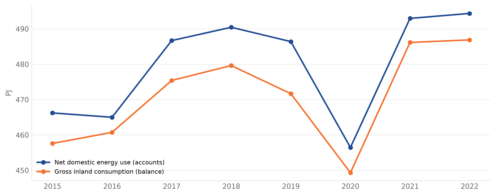
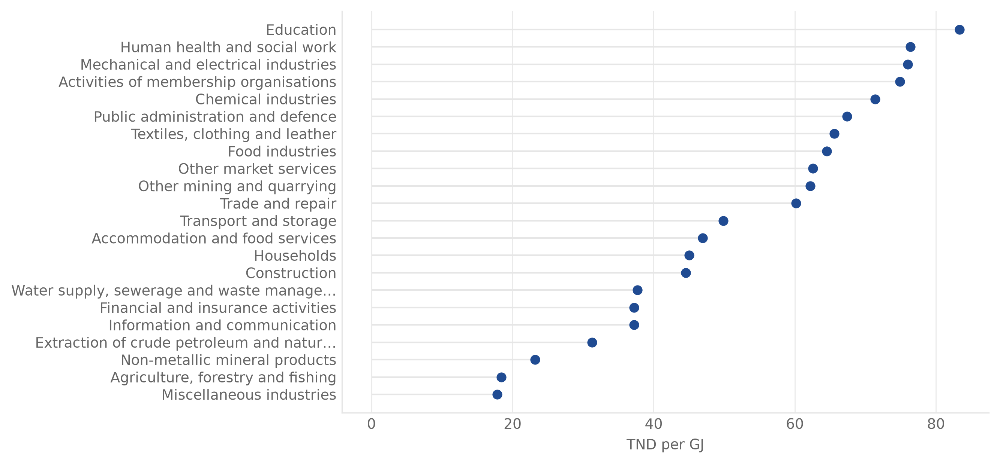
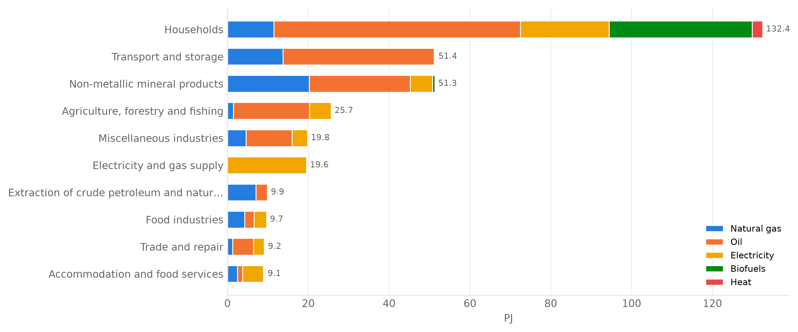
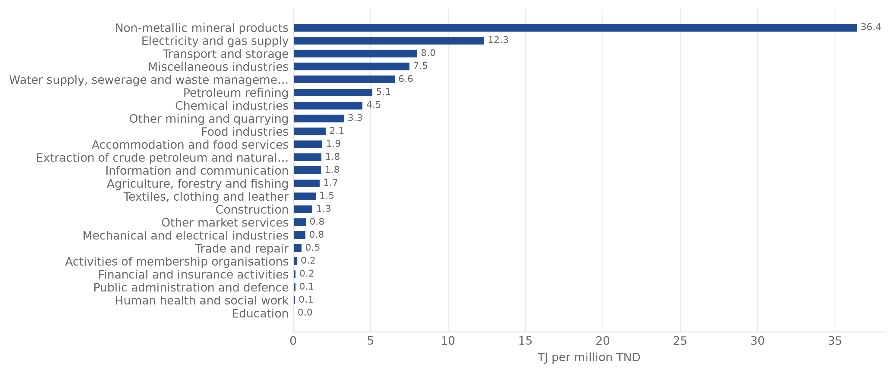

What this presentation covers
- Territory, residence and the bridge between the accounts and the balance.
- The checks that every compilation must pass.
- First results for 2015 to 2022, and how to disseminate them.
From the territory of the balance to the residents of the accounts, and what the accounts show
| Net domestic energy use of the accounts | residence principle |
| − energy use of residents abroad | |
| + energy use of non-residents on the territory | |
| ± other differences | |
| = Gross inland consumption of the balance | territory principle |
(Eurostat, 2014, paras 109 to 111)
| Year | Balance (TJ) | Inventory 1.D.1.a (TJ) | Gap (%) |
|---|---|---|---|
| 2015 | 8,750 | 8,744 | 0.07 |
| 2016 | 9,295 | 9,300 | −0.06 |
| 2017 | 10,886 | 10,882 | 0.03 |
| 2018 | 12,309 | 12,292 | 0.14 |
| 2019 | 12,979 | 12,999 | −0.15 |
| 2020 | 4,396 | 4,376 | 0.45 |
| 2021 | 5,527 | 5,534 | −0.13 |
| 2022 | 9,211 | 9,191 | 0.22 |
The aviation bunkers of the balance and of the inventory agree closely every year.

In 2022: 494 PJ against 487 PJ.



Building materials use about 36 TJ per million TND of value added.
| Use (PJ) | A | B | C | D | E | F | H | Other | Households | Exports |
|---|---|---|---|---|---|---|---|---|---|---|
| Natural gas | 2 | 7 | 44 | 144 | 2 | 0 | 14 | 7 | 12 | 0 |
| Heat | 0 | 0 | 3 | 0 | 0 | 0 | 0 | 0 | 3 | 0 |
| Oil | 19 | 6 | 110 | 0 | 1 | 6 | 37 | 14 | 61 | 81 |
| Electricity | 5 | 1 | 20 | 22 | 3 | 0 | 0 | 14 | 22 | 1 |
| Biofuels | 18 | 0 | 1 | 0 | 0 | 0 | 0 | 1 | 35 | 0 |
| End-use of energy products for non-energy purposes | 0 | 0 | 0 | 0 | 0 | 7 | 0 | 0 | 0 | 0 |
Energy and emissions accounts for Tunisia